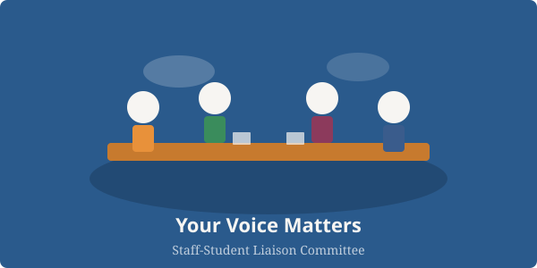

Your Voice
We collect and represent student feedback on teaching, facilities, and the overall student experience to ensure your concerns are addressed.
We are the bridge between students and staff in the Department of Computer Science. Your voice matters — and we are here to make sure it is heard.

We collect and represent student feedback on teaching, facilities, and the overall student experience to ensure your concerns are addressed.
Our committee brings together elected student representatives and academic staff to work on meaningful improvements together.
All meeting minutes and agendas are available on this site. We believe in open communication and accountability.
The Staff-Student Liaison Committee (SSLC) is an essential part of the Department of Computer Science at the University of Sheffield. We meet regularly throughout the academic year to discuss matters that affect the student experience, from module content and assessment methods to facilities and wellbeing support.
Whether you have a suggestion, a concern, or praise for something that is working well, we encourage you to get in touch. You can also attend our open meetings or speak directly to your year representative.